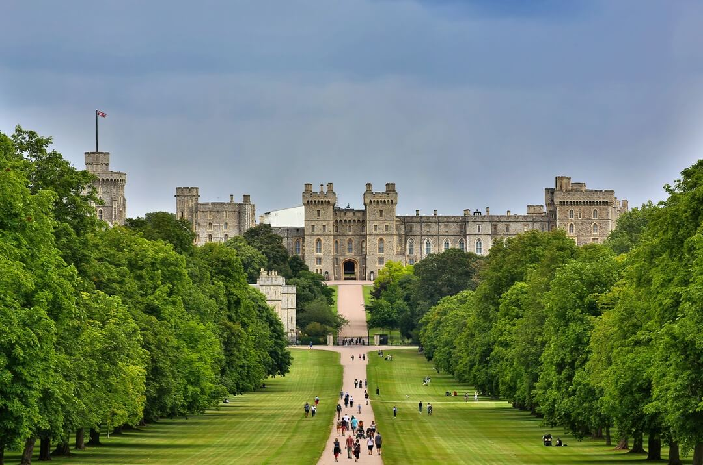

Windsor Castle
Located in the county of Berkshire, Windsor Castle is the oldest and largest inhabited castle in the world. It has been the family home of British kings and queens for over 1,000 years and is an official residence of Queen Elizabeth II.
Tower of London
Situated on the north bank of the River Thames in central London, the Tower of London is a historic castle and former royal residence. It has served variously as a fortress, royal palace, prison, and treasury. Today, it is home to the Crown Jewels of the United Kingdom and is a popular tourist attraction..

Stratford-upon-Avon
Birthplace of William Shakespeare, this town in Warwickshire attracts visitors to sites associated with the famous playwright, including his birthplace, Anne Hathaway's Cottage, and Holy Trinity Church, where he is buried.